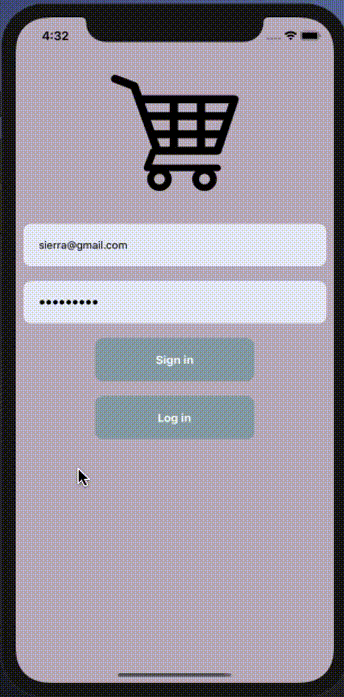
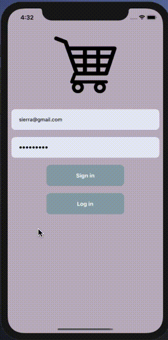

Project 009 - News Page

Project 010 - Login Page
Project 011 - To-Do App

| Project-008 | Project-009 | Project-010 |
|---|---|---|
|
Project 009 - News Page
|
Project 010 - Login Page  |
Project 011 - To-Do App
|
| Practice 001 | Practice 002 | Practice 003 |
ClarusShopping Page
|
ClarusShopping Page
|
ClarusShopping Page
|
|---|
Save your screen recording as the name ' in.mov'
open a terminal at the same folder in.mov file.
if not installed this do these firs brew install ffmpeg brew cask install xquartz #dependency for gifsicle, only required for mountain-lion and above open /usr/local/Cellar/x-quartz/2.7.4/XQuartz.pkg # runs the XQuartz installer (YOU NEED TO UPDATE THE PATH) brew install gifsicle
paste this command line to your terminal ffmpeg -i in.mov -s 600x400 -pix_fmt rgb24 -r 10 -f gif - | gifsicle --optimize=3 --delay=3 > out.gif